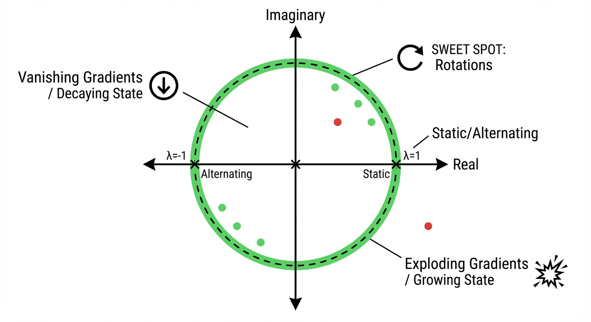
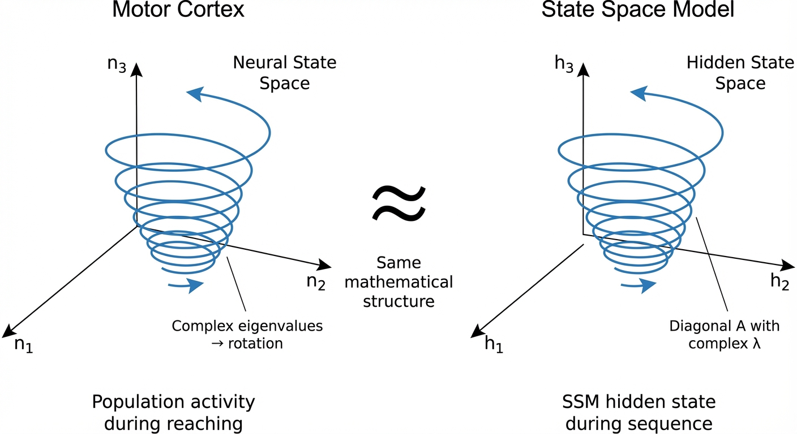
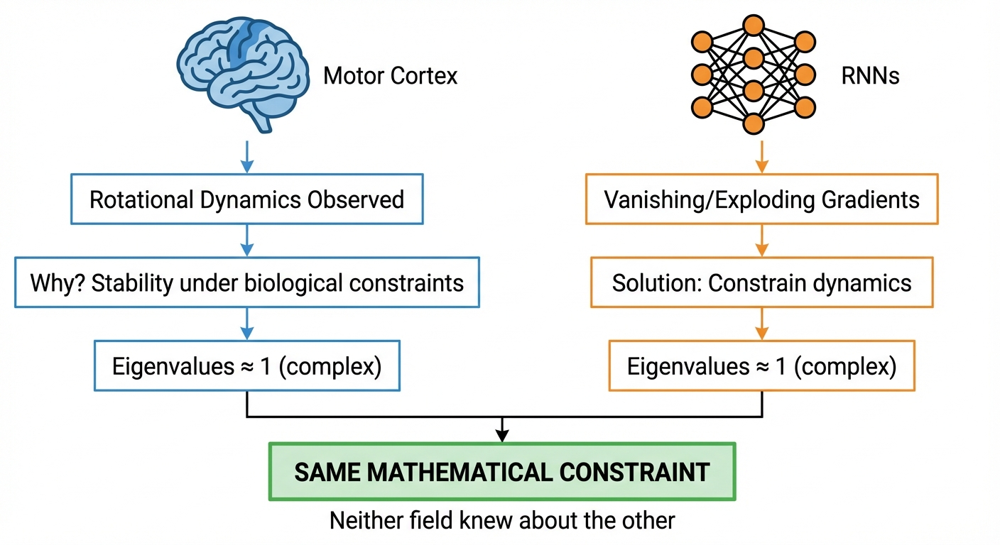

viewof realPart = Inputs.range([-1.5, 0.5], {
value: -0.1,
step: 0.01,
label: "Real part (Re λ): growth/decay rate"
})
viewof imagPart = Inputs.range([0, 3], {
value: 1.0,
step: 0.05,
label: "Imaginary part (Im λ): oscillation frequency"
})
viewof x0 = Inputs.range([-2, 2], {value: 1.5, step: 0.1, label: "Initial x₀"})
viewof y0 = Inputs.range([-2, 2], {value: 0, step: 0.1, label: "Initial y₀"})
viewof duration = Inputs.range([5, 30], {value: 15, step: 1, label: "Simulation time"})Robot Learning Part 6: The Eigenvalue Sweet Spot — How Brain Dynamics and RNN Training Converged on the Same Answer
robotics
neuroscience
RNN
state-space-models
eigenvalues
motor-control
robot-learning
NoteTL;DR
- The same math governs both problems: Motor cortex rotational dynamics and RNN gradient flow are both controlled by the eigenvalue spectrum of recurrent weight matrices
- Eigenvalues near the unit circle with imaginary components = stable, oscillatory dynamics (motor cortex) = gradients that neither vanish nor explode (RNNs)
- Convergent discovery: Evolution optimized for stable motor dynamics; ML theory derived the same constraint for trainable RNNs — neither knew about the other
- State Space Models (S4, Mamba) explicitly exploit complex eigenvalues and are now achieving SOTA in robotics (3-5x faster, 80% fewer parameters)
- Research opportunity: The connection between biological oscillatory dynamics and modern SSMs is underexplored — CPG-RL, LinOSS, and oscillator-based architectures may offer untapped potential for robot control
Introduction: A Surprising Convergence
In Part 4, we discussed how motor cortex exhibits rotational dynamics — lawful oscillatory patterns during reaching, even though reaching itself is non-periodic. Churchland et al. (2012) showed that 50-70% of neural variance during movement can be captured by rotational structure.\(^{[1]}\)
This raises a natural question: why rotations? Why not some other dynamical pattern?
At first glance, this seems like a neuroscience question with little relevance to machine learning. But it turns out that the answer — eigenvalues of the recurrent connectivity matrix — is the exact same mathematics that governs why RNNs are hard to train.
This post explores this convergence. We’ll see that:
- Evolution arrived at eigenvalues near the unit circle because they produce stable, sustained dynamics for motor control
- ML optimization theory arrived at the same constraint because it prevents vanishing/exploding gradients
- Modern State Space Models (S4, Mamba) explicitly parameterize around this insight
- Robotics applications are now exploiting this — with substantial gains over Transformers
This isn’t just a curiosity. It suggests that certain mathematical structures are universally optimal for recurrent computation under stability constraints, whether discovered through evolution or derived from first principles. Understanding this may guide the design of novel robot learning architectures.
TipFor Your Research
This post is written with an eye toward identifying novel research directions. I’ll highlight gaps in the literature, unexplored connections, and concrete hypotheses worth testing. If you’re looking to develop new models for robot control, the eigenvalue perspective may offer fresh architectural insights.
The Mathematical Foundation
Let’s build intuition for why eigenvalues matter, starting from basics.
Linear Dynamical Systems
Consider a simple linear recurrent system:
\[\frac{dx}{dt} = Ax \tag{1}\]
where \(x \in \mathbb{R}^n\) is the state and \(A \in \mathbb{R}^{n \times n}\) is the dynamics matrix. The solution is:
\[x(t) = e^{At} x(0) \tag{2}\]
The behavior is entirely determined by the eigenvalues \(\lambda_i\) of \(A\):
- Real part \(\text{Re}(\lambda_i)\): Controls growth/decay rate
- Imaginary part \(\text{Im}(\lambda_i)\): Controls oscillation frequency
NoteIntuition: What Eigenvalues Mean Physically
Think of eigenvalues as describing modes of the system:
- \(\lambda = -1\) (real, negative): Exponential decay — state collapses to zero
- \(\lambda = +1\) (real, positive): Exponential growth — state explodes
- \(\lambda = \pm i\) (purely imaginary): Sustained oscillation — state rotates forever
- \(\lambda = -0.1 + i\) (complex, small negative real): Slowly decaying oscillation
Important nuance: The jPCA method\(^{[1]}\) fits a skew-symmetric matrix, which by construction has purely imaginary eigenvalues (Re λ = 0). This captures idealized rotation. Real biological circuits likely have eigenvalues with small negative real parts for stability, but the dominant structure jPCA reveals is rotational. The “sweet spot” is eigenvalues very close to the imaginary axis.

Interactive: Explore Eigenvalue Dynamics
Use the controls below to explore how eigenvalue structure affects dynamical system behavior. Adjust the real and imaginary parts of the eigenvalue to see how trajectories change.
TipHow to Use This Visualization
- Real part controls growth/decay: negative = decay (stable), positive = growth (unstable)
- Imaginary part controls oscillation frequency: larger = faster rotation
- Green dot = starting point, Red dot = ending point
- Watch for the sweet spot: real part near 0, imaginary part non-zero → sustained rotations
Eigenvalue Location in the Complex Plane
The plot below shows where your eigenvalue sits in the complex plane. The unit circle (dashed) is the critical boundary for discrete-time systems.
Presets: Try These Eigenvalue Configurations
NoteWhat You’re Seeing
This visualization shows the continuous-time linear system \(\frac{dx}{dt} = Ax\) where \(A\) has eigenvalue \(\lambda = \text{Re}(\lambda) + i \cdot \text{Im}(\lambda)\).
- Phase portrait: The 2D trajectory through state space
- Time series: How each state component evolves over time
- Complex plane: Where the eigenvalue sits relative to the stability boundary
Try the presets:
- jPCA Rotations (Re=0): What Churchland et al.’s jPCA analysis finds — purely imaginary eigenvalues from a skew-symmetric matrix, giving perfect circles
- Motor Cortex Sweet Spot: A biologically realistic version with slight decay (Re λ = -0.05), ensuring stability while maintaining sustained oscillations during movement
Why This Matters for RNNs: The Bridge
You might wonder: “I came here to learn about neural networks, not differential equations. How does \(\frac{dx}{dt} = Ax\) relate to RNNs?”
The answer is direct: an RNN is literally a discrete-time dynamical system. The same mathematics governs both.
ImportantThe Core Connection: A Formal Derivation
We will prove that eigenvalues control both forward dynamics and backward gradients in RNNs.
Part 1: Forward Dynamics
Consider the simplest linear RNN (no nonlinearity, no input):
\[h_t = W h_{t-1} \tag{3}\]
where \(h_t \in \mathbb{R}^n\) is the hidden state and \(W \in \mathbb{R}^{n \times n}\) is the recurrent weight matrix.
Unrolling the recurrence:
\[h_1 = W h_0\] \[h_2 = W h_1 = W(W h_0) = W^2 h_0\] \[h_t = W^t h_0 \quad \text{(by induction)} \tag{4}\]
Using eigendecomposition: Assume \(W\) is diagonalizable with eigendecomposition \(W = V \Lambda V^{-1}\), where:
- \(V = [v_1 | v_2 | \cdots | v_n]\) contains eigenvectors as columns
- \(\Lambda = \text{diag}(\lambda_1, \lambda_2, \ldots, \lambda_n)\) contains eigenvalues on the diagonal
Then: \[W^t = (V \Lambda V^{-1})^t = V \Lambda V^{-1} \cdot V \Lambda V^{-1} \cdots V \Lambda V^{-1} = V \Lambda^t V^{-1} \tag{5}\]
where \(\Lambda^t = \text{diag}(\lambda_1^t, \lambda_2^t, \ldots, \lambda_n^t)\).
Expressing \(h_t\) in eigenbasis: Let \(\tilde{h}_0 = V^{-1} h_0\) be the initial state in the eigenbasis. Then:
\[h_t = V \Lambda^t V^{-1} h_0 = V \Lambda^t \tilde{h}_0 = V \begin{bmatrix} \lambda_1^t \tilde{h}_{0,1} \\ \lambda_2^t \tilde{h}_{0,2} \\ \vdots \\ \lambda_n^t \tilde{h}_{0,n} \end{bmatrix} = \sum_{i=1}^{n} \lambda_i^t \tilde{h}_{0,i} v_i \tag{6}\]
Key observation: Each eigenmode evolves as \(\lambda_i^t\). The norm of \(h_t\) is bounded by:
\[\|h_t\| \leq \|V\| \cdot \|V^{-1}\| \cdot \max_i |\lambda_i|^t \cdot \|h_0\| = \kappa(V) \cdot \rho(W)^t \cdot \|h_0\|\]
where \(\rho(W) = \max_i |\lambda_i|\) is the spectral radius and \(\kappa(V)\) is the condition number of \(V\).
NoteForward Dynamics Result
- If \(\rho(W) < 1\): \(\|h_t\| \to 0\) exponentially (state decays)
- If \(\rho(W) > 1\): \(\|h_t\| \to \infty\) exponentially (state explodes)
- If \(\rho(W) = 1\): \(\|h_t\|\) remains bounded (state is sustained)
Part 2: Backward Gradient Flow
Now consider a loss \(L = \ell(h_T)\) at the final timestep. We want \(\frac{\partial L}{\partial h_0}\).
Applying the chain rule backward:
\[\frac{\partial L}{\partial h_{T-1}} = \frac{\partial h_T}{\partial h_{T-1}}^\top \frac{\partial L}{\partial h_T} = W^\top \frac{\partial L}{\partial h_T} \tag{7}\]
Note: We use the convention that \(\frac{\partial L}{\partial h}\) is a column vector, and \(\frac{\partial h_t}{\partial h_{t-1}} = W\) (Jacobian).
Unrolling the gradient:
\[\frac{\partial L}{\partial h_{T-1}} = W^\top \frac{\partial L}{\partial h_T}\] \[\frac{\partial L}{\partial h_{T-2}} = W^\top \frac{\partial L}{\partial h_{T-1}} = (W^\top)^2 \frac{\partial L}{\partial h_T}\] \[\frac{\partial L}{\partial h_0} = (W^\top)^T \frac{\partial L}{\partial h_T} \tag{8}\]
Eigenvalues of \(W^\top\): If \(W\) has eigenvalue \(\lambda_i\) with eigenvector \(v_i\), then \(W^\top\) has eigenvalue \(\lambda_i\) with eigenvector \((V^{-1})^\top e_i\) (the \(i\)-th row of \(V^{-1}\) transposed).
Crucially: \(W\) and \(W^\top\) have the same eigenvalues.
Therefore, \((W^\top)^T\) has eigenvalues \(\lambda_1^T, \lambda_2^T, \ldots, \lambda_n^T\) — identical to \(W^T\).
Gradient norm bound:
\[\left\|\frac{\partial L}{\partial h_0}\right\| \leq \|(W^\top)^T\| \cdot \left\|\frac{\partial L}{\partial h_T}\right\| \leq \kappa(V) \cdot \rho(W)^T \cdot \left\|\frac{\partial L}{\partial h_T}\right\|\]
NoteBackward Gradient Result
- If \(\rho(W) < 1\): \(\left\|\frac{\partial L}{\partial h_0}\right\| \to 0\) exponentially (vanishing gradients)
- If \(\rho(W) > 1\): \(\left\|\frac{\partial L}{\partial h_0}\right\| \to \infty\) exponentially (exploding gradients)
- If \(\rho(W) = 1\): Gradients remain bounded (stable training)
Part 3: The Unified Condition
TipTheorem: Eigenvalue Duality
For a linear RNN \(h_t = W h_{t-1}\), let \(\rho(W) = \max_i |\lambda_i(W)|\) be the spectral radius. Then:
- Forward stability: \(\|h_T\| = O(\rho(W)^T)\)
- Backward stability: \(\left\|\frac{\partial L}{\partial h_0}\right\| = O(\rho(W)^T)\)
Both are controlled by the same quantity — the spectral radius \(\rho(W)\).
Corollary: For stable forward dynamics AND trainable gradients, we need \(\rho(W) \approx 1\).
Part 4: Why Complex Eigenvalues?
If \(\rho(W) = 1\) and eigenvalues are real, we only have \(\lambda = \pm 1\): - \(\lambda = 1\): Constant mode (\(\lambda^t = 1\) for all \(t\)) - \(\lambda = -1\): Alternating mode (\(\lambda^t = (-1)^t\))
Neither generates smooth, time-varying dynamics.
Complex eigenvalues with \(|\lambda| = 1\) can be written as \(\lambda = e^{i\theta}\) for some angle \(\theta\). Then:
\[\lambda^t = e^{it\theta} = \cos(t\theta) + i\sin(t\theta)\]
This produces oscillations at frequency \(\theta\). In real coordinates, a complex conjugate pair \(\lambda, \bar{\lambda} = re^{\pm i\theta}\) (where \(r = |\lambda|\)) produces:
\[\begin{bmatrix} x_t \\ y_t \end{bmatrix} = r^t \begin{bmatrix} \cos(t\theta) & -\sin(t\theta) \\ \sin(t\theta) & \cos(t\theta) \end{bmatrix} \begin{bmatrix} x_0 \\ y_0 \end{bmatrix}\]
- \(r < 1\): Inward spiral (decaying oscillation)
- \(r > 1\): Outward spiral (exploding oscillation)
- \(r = 1\): Circle (sustained oscillation) ← The sweet spot
TipIntuition: The Scalar Case
The derivation above may seem abstract. Here’s the core insight in the simplest possible case — a 1D “RNN”:
\[h_t = \lambda h_{t-1} \implies h_T = \lambda^T h_0\]
The gradient: \[\frac{\partial L}{\partial h_0} = \lambda^T \frac{\partial L}{\partial h_T}\]
Both scale as \(\lambda^T\). Numerically:
| \(\lambda\) | \(\lambda^{100}\) | Interpretation |
|---|---|---|
| 0.9 | \(\approx 0.00003\) | Vanished! |
| 1.1 | \(\approx 13{,}781\) | Exploded! |
| 1.0 | \(= 1\) | Preserved |
For matrices, each eigenvalue acts like an independent scalar mode. The largest eigenvalue magnitude (spectral radius) dominates.
The punchline: The eigenvalue spectrum of \(W\) controls both:
- Forward dynamics: \(h_T = W^T h_0\) — eigenvalues determine growth/decay/oscillation
- Backward gradients: \(\frac{\partial L}{\partial h_0} = (W^\top)^T \frac{\partial L}{\partial h_T}\) — same eigenvalues, same exponential behavior
This mathematical identity explains why motor cortex exhibits rotational dynamics (eigenvalues near unit circle → stable oscillations) AND why ML needs the same constraint for trainable RNNs (eigenvalues near unit circle → stable gradients). Same math, different entry points.
The Eigenvalue Spectrum Determines Everything
For a discrete-time system (like an RNN):
\[h_t = \sigma(W h_{t-1} + U x_t) \tag{9}\]
The key quantity is the magnitude of eigenvalues \(|\lambda_i|\) of the weight matrix \(W\):
| Eigenvalue Magnitude | Forward Dynamics | Backward Gradients |
|---|---|---|
| \(|\lambda| < 1\) | State decays exponentially | Gradients vanish |
| \(|\lambda| > 1\) | State grows exponentially | Gradients explode |
| \(|\lambda| \approx 1\) | State is sustained | Gradients propagate |
| \(|\lambda| \approx 1\), complex | Rotational dynamics | Gradients propagate with phase |
The sweet spot is the same for both problems: eigenvalues with magnitude close to 1.
Why Complex Eigenvalues?
Real eigenvalues on the unit circle (i.e., \(\lambda = \pm 1\)) produce either: - Constant state (\(\lambda = 1\)) - Alternating state (\(\lambda = -1\))
Neither is useful for generating smooth, time-varying motor commands.
Complex eigenvalues with \(|\lambda| \approx 1\) produce rotations in state space — smooth, continuous trajectories that can drive time-varying outputs without exploding or collapsing.
This is why motor cortex exhibits rotational dynamics: it’s the natural solution for generating smooth temporal patterns with a recurrent circuit.

TipThe Neural Manifold: Geometry Beyond Dynamics
Eigenvalue dynamics tell only half the story. The other half is geometry — the shape of the space where neural activity lives.
Sara Solla’s group at Northwestern\(^{[24,25,26,27,28]}\) has shown that motor cortex activity lives on low-dimensional manifolds with remarkable properties:
- Task clustering: Different tasks form distinct clusters in the manifold — task similarity = spatial proximity
- Multi-year stability: The manifold persists even as individual neurons turn over
- Intrinsic nonlinearity: Manifolds are curved, not flat, especially during complex tasks
- Learning constraints: Within-manifold adaptation takes minutes; outside-manifold learning takes days
These findings suggest robot policies should have nonlinear latent manifolds with stable geometric structure during continual learning.
For a deep dive into manifold geometry and its implications for robot learning, see Part 7: Neural Manifolds.
How Neuroscientists Discover Rotational Dynamics
Before we ask why motor cortex exhibits rotational dynamics, we need to understand how neuroscientists discovered them in the first place. This section bridges the gap between raw neural recordings and the elegant spiral trajectories you see in papers like Churchland et al. (2012)\(^{[1]}\).
Step 1: Recording Neural Spikes
Neuroscientists implant multi-electrode arrays (like the Utah array) into motor cortex. Each electrode records the action potentials (spikes) of nearby neurons — brief electrical impulses (~1 ms) that occur when a neuron “fires.”
NoteWhat’s a Spike?
When a neuron’s membrane potential crosses a threshold (~-55 mV), it generates an all-or-nothing action potential — a spike. The timing and frequency of spikes encode information. A single neuron might fire 10-100 times per second during movement.
A typical experiment records from 96-192 neurons simultaneously while a monkey performs a reaching task (e.g., move arm to one of 8 targets). Each trial captures spike times for all neurons during the ~500 ms of movement.
Step 2: Computing Spike Rates
Raw spike times are converted to spike rates by counting spikes in time bins (e.g., 10-50 ms windows). For neuron \(i\) at time \(t\):
\[r_i(t) = \frac{\text{number of spikes in }[t, t+\Delta t]}{\Delta t}\]
This gives a continuous-valued rate (spikes/second) rather than discrete spike times.
Step 3: Building the Population Activity Matrix
Stack all neurons’ spike rates into a population activity matrix:
\[X = \begin{bmatrix} r_1(t_1) & r_1(t_2) & \cdots & r_1(t_T) \\ r_2(t_1) & r_2(t_2) & \cdots & r_2(t_T) \\ \vdots & \vdots & \ddots & \vdots \\ r_N(t_1) & r_N(t_2) & \cdots & r_N(t_T) \end{bmatrix}\]
Each column is the population state at one time point — a point in \(N\)-dimensional space where \(N\) is the number of neurons (e.g., 100).
Step 4: Dimensionality Reduction via PCA
With 100+ neurons, visualization is impossible. Principal Component Analysis (PCA) finds the directions of greatest variance:
\[X_{\text{reduced}} = W_{\text{PCA}}^\top X\]
where \(W_{\text{PCA}}\) contains the top \(k\) principal components (typically \(k = 6-12\)).
TipKey Insight: The Neural Manifold
PCA reveals that despite having 100+ neurons, population activity lives on a low-dimensional manifold — typically 6-12 dimensions capture 80-90% of the variance. This isn’t just dimensionality reduction for visualization; it suggests the brain operates in a low-dimensional computational space.
After PCA, each time point is a vector in this low-dimensional space. Plotting the first 2-3 principal components (PC1, PC2, PC3) over time traces a trajectory through this space.
Step 5: jPCA Reveals Rotational Structure
Here’s where it gets interesting. Churchland et al. (2012)\(^{[1]}\) didn’t just apply PCA — they asked: what dynamics govern these trajectories?
jPCA fits a linear dynamical system to the PCA-reduced data:
\[\frac{dx}{dt} = M_{\text{skew}} x\]
where \(M_{\text{skew}}\) is constrained to be skew-symmetric (\(M = -M^\top\)). This is crucial because skew-symmetric matrices have purely imaginary eigenvalues — meaning they produce rotations without growth or decay.
NoteWhy Skew-Symmetric?
A skew-symmetric matrix produces rotation only. If you find that \(M_{\text{skew}}\) fits the data well, you’ve shown the dynamics are fundamentally rotational. Churchland et al. found that 50-70% of neural variance during reaching could be explained by such rotational dynamics.
The Resulting Picture
After this pipeline (spikes → rates → population matrix → PCA → jPCA), we get:
- Principal components (PC1, PC2, …) that capture the main patterns in neural activity
- Trajectories through this low-dimensional space that exhibit spiral/rotational structure
- Eigenvalues of the fitted dynamics matrix that are purely imaginary (rotations) or nearly so
ImportantUnderstanding Figure 2: Motor Cortex vs. SSM
When you see plots with axes labeled “n₁, n₂, n₃” or “PC1, PC2, PC3” in neuroscience papers, these are principal component dimensions — linear combinations of raw spike rates that capture the dominant patterns.
In the SSM comparison (right side of Figure 2), “h₁, h₂, h₃” are hidden state dimensions of the model. The analogy is:
| Motor Cortex | State Space Model |
|---|---|
| 100 neurons with spike rates | \(n\)-dimensional hidden state vector |
| PCA reduces to 6-12 dimensions | Hidden state is \(n\)-dimensional (e.g., 64) |
| PC1, PC2, PC3 (top components) | h₁, h₂, h₃ (selected hidden dimensions) |
| Rotational trajectories from neural dynamics | Rotational trajectories from learned dynamics |
Both show spirals because both have eigenvalues with imaginary components near the unit circle. The math is identical; the origin is different (biology vs. learning).
Motor Cortex: Why Rotations?
Now that we understand how rotational dynamics are discovered, let’s dig deeper into why the brain exhibits them.
The Constraints of Neural Hardware
Motor cortex is a recurrent circuit — neurons connect to each other, forming loops. The connectivity matrix has certain properties:
- Excitation/inhibition balance: Roughly equal amounts of positive and negative connections
- Sparse connectivity: Each neuron connects to a small fraction of others
- Dale’s law: Individual neurons are either excitatory or inhibitory, not both
These constraints, combined with the need for stable dynamics, naturally produce connectivity matrices with complex eigenvalues.\(^{[2]}\)
Why Not Other Dynamics?
Let’s consider alternatives:
| Dynamics Type | Eigenvalue Structure | Problem for Motor Control |
|---|---|---|
| Fixed point | Real, negative | Can’t generate time-varying output |
| Exponential growth | Real, positive | Unstable — activity explodes |
| Exponential decay | Real, small negative | State collapses — loses information |
| Chaos | Mixed, sensitive to initial conditions | Unpredictable — can’t reliably control |
| Rotations | Complex, \(|\lambda| \approx 1\) | ✓ Stable, smooth, time-varying |
Rotations are a sweet spot: bounded (won’t explode), non-trivial (won’t collapse), smooth (no discontinuities), and time-varying (can drive movement).
The Fourier Intuition
Here’s another way to think about it: rotational dynamics provide a temporal basis set.
Any smooth trajectory can be decomposed into oscillations at different frequencies (Fourier decomposition). If motor cortex has oscillators at various frequencies, it can combine them through a linear readout to produce arbitrary smooth outputs:
\[\text{muscle command}(t) = \sum_i w_i \cdot \text{oscillator}_i(t)\]
The oscillators are the internal representation; the readout weights determine the output. Different movements = different readout weights on the same oscillatory basis.
This is computationally elegant: - Compact: Just need oscillator phases + readout weights - Flexible: Change weights → change movement - Smooth by construction: Oscillations can’t jump discontinuously
ImportantKey Insight
The brain doesn’t “choose” rotational dynamics because they’re optimal in some abstract sense. Rather, rotations are what emerge when you build a recurrent circuit under biological constraints (stability, metabolic efficiency, connectivity limits) that needs to produce smooth, time-varying outputs.
Evolution didn’t solve an optimization problem with “rotations” as the answer — it stumbled into the only stable solution that works.
RNNs: The Vanishing Gradient Problem
Now let’s see how ML arrived at the same mathematics from a completely different direction.
The Training Problem
When training an RNN via backpropagation through time (BPTT), gradients must flow backward through many timesteps. The gradient at time \(t\) depends on the gradient at time \(t+1\) multiplied by the Jacobian of the transition:
\[\frac{\partial L}{\partial h_t} = \frac{\partial L}{\partial h_{t+1}} \cdot \frac{\partial h_{t+1}}{\partial h_t} \tag{10}\]
Over \(T\) timesteps, this becomes:
\[\frac{\partial L}{\partial h_0} = \frac{\partial L}{\partial h_T} \cdot \prod_{t=0}^{T-1} \frac{\partial h_{t+1}}{\partial h_t}\]
The product of Jacobians is the problem. If eigenvalues of these Jacobians have magnitude \(< 1\), gradients vanish. If \(> 1\), they explode.
The Same Eigenvalue Condition
For a linear RNN, the Jacobian is just the weight matrix \(W\). The gradient magnitude scales as:
\[\left\| \frac{\partial L}{\partial h_0} \right\| \propto \prod_{t=0}^{T-1} |\lambda_{\max}|^t = |\lambda_{\max}|^T\]
- \(|\lambda_{\max}| < 1\): Gradients vanish as \(T \to \infty\)
- \(|\lambda_{\max}| > 1\): Gradients explode as \(T \to \infty\)
- \(|\lambda_{\max}| \approx 1\): Gradients propagate
This is identical to the dynamics stability condition. The mathematics doesn’t care whether you’re running forward (dynamics) or backward (gradients).
Solutions in ML
ML researchers discovered this independently and developed several solutions:
| Solution | How It Enforces \(|\lambda| \approx 1\) |
|---|---|
| LSTM | Gating creates “constant error carousel” — effective eigenvalue = 1 for cell state |
| GRU | Similar gating mechanism |
| Orthogonal RNNs\(^{[3]}\) | Constrain \(W\) to be orthogonal → eigenvalues exactly on unit circle |
| Unitary RNNs\(^{[4]}\) | Constrain \(W\) to be unitary (complex orthogonal) → eigenvalues on unit circle |
| State Space Models\(^{[5]}\) | Parameterize eigenvalues directly, initialize near unit circle |
The key paper is Arjovsky et al. (2016)\(^{[4]}\), which explicitly derived that unitary weight matrices (eigenvalues on unit circle) prevent gradient vanishing/explosion.
Interactive: Discrete-Time Dynamics and the Unit Circle
In discrete-time systems (like RNNs), the unit circle is the stability boundary. Eigenvalues inside decay; outside explode. Explore how the eigenvalue magnitude affects gradient propagation over many timesteps.
TipDiscrete vs Continuous Time
- Continuous-time (differential equations): Stability boundary is the imaginary axis (Re λ = 0)
- Discrete-time (difference equations/RNNs): Stability boundary is the unit circle (|λ| = 1)
The conversion between them involves the matrix exponential: if \(A_c\) is continuous-time with eigenvalue \(\lambda_c\), then the discrete-time system with timestep \(\Delta t\) has eigenvalue \(\lambda_d = e^{\lambda_c \Delta t}\).
For RNNs, we care about \(|\lambda_d|\): eigenvalues inside the unit circle cause vanishing gradients; outside cause explosion.
WarningThe Connection Was NOT Explicit
Here’s what’s surprising: the ML literature derived the eigenvalue condition from gradient flow analysis. The neuroscience literature described rotational dynamics from neural recordings. Neither cited the other.
The convergence is implicit — both fields arrived at “eigenvalues near unit circle with imaginary components” for different reasons: - Neuroscience: Stable dynamics for motor control - ML: Stable gradients for training
This suggests the constraint is fundamental, not an artifact of either field’s particular concerns.

State Space Models: The Explicit Parameterization
State Space Models (SSMs) make the eigenvalue structure explicit, and this is why they’re succeeding in robotics.
The S4 Architecture
S4\(^{[5]}\) (Structured State Space Sequence model) parameterizes dynamics as:
\[h'(t) = Ah(t) + Bx(t)\] \[y(t) = Ch(t) + Dx(t)\]
The key innovation is how \(A\) is structured. In S4D (diagonal S4)\(^{[6]}\), \(A\) is diagonal with complex entries:
\[A = \text{diag}(\lambda_1, \lambda_2, ..., \lambda_n)\]
Each \(\lambda_i\) is a complex number controlling: - Magnitude: How fast information decays - Phase: Oscillation frequency
HiPPO Initialization
The HiPPO framework\(^{[7]}\) provides principled initialization for these eigenvalues based on optimal polynomial projections. The HiPPO-LegS matrix has eigenvalues that enable long-range memory while remaining stable.
Key insight: The eigenvalue distribution is directly controllable. You can tune how much the model “remembers” by placing eigenvalues closer to or farther from the unit circle.
Mamba: Selective State Spaces
Mamba\(^{[8]}\) extends S4 by making the SSM parameters input-dependent:
\[A(x), B(x), C(x) = \text{functions of input } x\]
This allows the model to selectively propagate or forget information based on content. The eigenvalue structure is preserved, but the specific eigenvalues adapt to the input.
Linear Recurrent Units (LRU)
The LRU paper\(^{[9]}\) (ICML 2023) is particularly clear about the eigenvalue perspective:
“It is the eigenvalue distribution of the recurrent layer at initialization that determines if the model can capture long-range reasoning.”
They sample eigenvalues uniformly on an annulus (ring) in the complex plane:
\[\lambda_i = r_i \cdot e^{i\theta_i}, \quad \text{where } r_i \sim \text{Uniform}(r_{\min}, r_{\max}), \quad \theta_i \sim \text{Uniform}(0, 2\pi)\]
NoteWhat Does “Ring in the Complex Plane” Mean?
The complex plane has real numbers on the horizontal axis and imaginary numbers on the vertical axis. Any complex number \(\lambda = a + bi\) is a point at coordinates \((a, b)\).
The magnitude \(|\lambda| = \sqrt{a^2 + b^2}\) is the distance from the origin. A “ring” or annulus is the region between two circles:
Im(λ)
↑
| ● ← eigenvalue
╭───────┼───────╮
╱ ╭────┼────╮ ╲
│ ╱ │ ╲ │ ← outer circle: |λ| = r_max
│ │ │ │ │
────┼──│──────┼──────│──┼──→ Re(λ)
│ │ │ │ │
│ ╲ │ ╱ │ ← inner circle: |λ| = r_min
╲ ╰────┼────╯ ╱
╰───────┼───────╯
│
Ring: r_min ≤ |λ| ≤ r_maxLRU samples eigenvalues uniformly inside this ring. Because \(r_{\min} < r_{\max} < 1\), all eigenvalues are inside the unit circle (stable), but not too close to zero (which would cause fast decay and forget everything).
Typical values: \(r_{\min} = 0.9\), \(r_{\max} = 0.999\). This places eigenvalues close to the unit circle but strictly inside it — stable yet long-memory.
TipWhy SSMs Work
SSMs succeed because they directly parameterize what matters — the eigenvalue spectrum. Instead of hoping that training finds good eigenvalues (as in vanilla RNNs), they:
- Initialize eigenvalues in the stable regime (near unit circle)
- Parameterize in terms of eigenvalues (diagonal \(A\))
- Allow input-dependent modulation (Mamba)
This is arguably what LSTMs discovered implicitly through gating — SSMs make it explicit.
WarningCommon Misconception: “RNNs Are Dead”
A common belief is that RNNs are obsolete — replaced by Transformers. This is true for NLP benchmarks but misleading for robotics:
| Context | Reality |
|---|---|
| NLP/LLMs | Transformers dominate (scaling, parallelization) |
| Computational neuroscience | RNNs remain central for modeling brain circuits |
| Robotics control | SSMs (linear RNNs) are outperforming Transformers |
| Real-time systems | Recurrence offers \(O(1)\) per-step vs \(O(n)\) Transformer KV cache |
The “death of RNNs” narrative is domain-specific. For continuous-time control with real-time constraints, recurrent architectures are coming back in the form of SSMs.
SSMs in Robotics: Current Applications
The robotics community has noticed. SSMs are achieving strong results with substantial efficiency gains.
Key Papers
| Paper | Venue | Key Result |
|---|---|---|
| MaIL\(^{[10]}\) | CoRL 2024 | Beats Transformers with 20% of training data on LIBERO |
| RoboMamba\(^{[11]}\) | NeurIPS 2024 | 3x faster inference, VLA with Mamba backbone |
| Mamba Policy\(^{[12]}\) | IROS 2025 | 80% fewer params, 90% less FLOPs than DP3 |
| Decision S4\(^{[13]}\) | ICLR 2023 | 5x faster than Decision Transformer |
| LRAM\(^{[14]}\) | NeurIPS 2024 | xLSTM matches Transformers with constant-time inference |
| MTIL\(^{[15]}\) | 2025 | Encodes full trajectory history, beats ACT and Diffusion Policy |
Why SSMs Excel for Robot Control
Several properties make SSMs well-suited for motor control:
- Continuous-time formulation: Robot control is inherently continuous; SSMs naturally model this
- Linear complexity: \(O(n)\) vs \(O(n^2)\) for Transformers — critical for high-frequency control
- Smooth outputs: Recurrent state evolution produces naturally smooth trajectories
- State compression: History compressed into fixed-size state — no growing KV cache
- Eigenvalue control: Can tune memory/forgetting for different control timescales
Benchmark Results
From MaIL (CoRL 2024) on LIBERO benchmark:
| Model | LIBERO-Spatial | LIBERO-Object | LIBERO-Goal | LIBERO-Long |
|---|---|---|---|---|
| Transformer | 78.2% | 82.4% | 68.3% | 45.1% |
| Mamba (MaIL) | 84.6% | 88.1% | 74.2% | 53.8% |
With only 20% of training data, MaIL matches Transformer performance.
Oscillatory Architectures for Robot Control
Beyond SSMs, explicitly oscillatory architectures are emerging.
Central Pattern Generators (CPGs)
CPGs are neural circuits that generate rhythmic motor patterns (walking, breathing, swimming). They’re naturally oscillatory — implemented by coupled oscillators with specific eigenvalue structure.
CPG-RL\(^{[16]}\) integrates CPGs into deep RL for quadruped locomotion:
- Agent learns to modulate oscillator parameters (frequency, amplitude, phase)
- CPG provides rhythmic “backbone”; RL learns task-specific modulation
- Results: More robust locomotion, better generalization to terrain changes
LinOSS: Linear Oscillatory State Space
LinOSS\(^{[17]}\) (ICLR 2025 Oral, Top 1%) explicitly builds on biological oscillatory dynamics:
- Based on forced harmonic oscillators observed in biological neural networks
- Stable and expressive without restrictive parameter constraints
- Developed by Rusch & Rus at MIT CSAIL
This is the most explicit bridge between neuroscience oscillatory dynamics and modern ML architecture design.
coRNN: Coupled Oscillatory RNN
coRNN\(^{[18]}\) (ICLR 2021) designs RNNs as coupled nonlinear oscillators:
- Precise bounds on hidden state gradients — provable stability
- Competitive with LSTMs on long-range dependency tasks
- Directly inspired by biological coupled oscillator networks
The Oscillating Latent Dynamics Paper
The most direct bridge to robotics is “Oscillating Latent Dynamics in Robot Systems”\(^{[19]}\) (Scientific Reports, 2024):
- Studies rotational trajectories in monkeys and robots during walking/reaching
- Shows oscillatory dynamics learned in robot latent spaces resemble motor cortex dynamics
- First demonstration of rotational dynamics driving a real robot arm (Franka Panda) during reaching
This validates the neuroscience-to-robotics transfer: the same dynamics that work in motor cortex also work in robot control.
Why Transformers Dominated Anyway
If eigenvalue-constrained recurrence is so fundamental, why did Transformers win?
The Scaling Story
| Factor | Transformers | RNNs |
|---|---|---|
| Training parallelization | All positions at once | Sequential bottleneck |
| Hardware fit | Matrix multiplies (GPUs love these) | Sequential ops |
| Scaling with compute | Excellent | Poor |
| Long-range dependencies | Direct attention | Vanishing gradients (if not constrained) |
Transformers won on scaling efficiency, not architectural elegance. Given enough compute and data, their disadvantages become irrelevant.
When Recurrence Matters
But robotics has different constraints:
- Inference efficiency: Robots need real-time control (50-1000 Hz). Transformers’ \(O(n^2)\) attention doesn’t scale.
- Streaming/online: Robots process continuous streams, not fixed-length sequences.
- Energy efficiency: Embodied systems have power budgets. Brain uses ~20W.
- Continuous-time: Control is inherently continuous; Transformers discretize.
For these reasons, recurrent architectures (SSMs) are making a comeback in robotics specifically.
The Hybrid Future
The likely future is hybrid architectures: - Transformers for “slow thinking” (VLM reasoning, planning) - SSMs for “fast acting” (motor control, real-time adaptation)
This mirrors the brain’s organization: - Cortical Transformers-like processing for flexible cognition - Subcortical/cerebellar SSM-like processing for fast, automatic control
Conclusion: The Eigenvalue Bridge
NoteSummary
We’ve traced a surprising convergence:
Motor cortex exhibits rotational dynamics because recurrent circuits under stability constraints naturally produce eigenvalues near the unit circle with imaginary components
RNN training requires eigenvalues near the unit circle to prevent vanishing/exploding gradients — the same mathematical constraint, derived independently
State Space Models (S4, Mamba) make eigenvalue structure explicit and are achieving strong results in robotics: 3-5x faster inference, 80% fewer parameters, better sample efficiency
Oscillatory architectures (CPG-RL, LinOSS, coRNN) explicitly leverage biological dynamics and show promise for locomotion and motor control
The meta-insight: certain mathematical structures are universally optimal for recurrent computation under stability constraints. Evolution discovered this through natural selection; ML theory derived it from gradient flow analysis. Neither field fully exploited the connection until recently.
For robotics, the implication is clear: parameterize your dynamics around eigenvalues. Don’t hope training finds good dynamics — constrain and initialize them directly. The brain figured this out 500 million years ago.
NoteWhat’s Next
This series has covered:
- Part 1: Diffusion Policy — Generative models for action
- Part 1.5: ACT — Action chunking with Transformers
- Part 3: VLA Models — Vision-language-action integration
- Part 4: Brain Motor Control — Neuroscience foundations
- Part 5: Architectural Principles — Engineering implications
- Part 6: Eigenvalue Dynamics — The mathematical bridge (this post)
- Part 7: Neural Manifolds — The geometry of skill representation
References
[1] Churchland et al. (2012). Neural Population Dynamics During Reaching. Nature.
[3] Helfrich et al. (2018). Orthogonal Recurrent Neural Networks with Scaled Cayley Transform. ICML.
[4] Arjovsky, Shah & Bengio (2016). Unitary Evolution Recurrent Neural Networks. ICML.
[5] Gu et al. (2022). Efficiently Modeling Long Sequences with Structured State Spaces. ICLR.
[7] Gu et al. (2020). HiPPO: Recurrent Memory with Optimal Polynomial Projections. NeurIPS.
[8] Gu & Dao (2024). Mamba: Linear-Time Sequence Modeling with Selective State Spaces. COLM.
[9] Orvieto et al. (2023). Resurrecting Recurrent Neural Networks for Long Sequences. ICML.
[10] Jia et al. (2024). MaIL: Improving Imitation Learning with Mamba. CoRL.
[13] Decision S4 (2023). Efficient Sequence-Based RL via State Spaces Layers. ICLR.
[14] LRAM (2024). Large Recurrent Action Model. NeurIPS Workshop.
[15] MTIL (2025). Encoding Full History with Mamba for Temporal Imitation Learning.
[16] Bellegarda et al. (2022). CPG-RL: Learning Central Pattern Generators for Quadruped Locomotion.
[17] Rusch & Rus (2025). LinOSS: Linear Oscillatory State Space Models. ICLR.
[18] Rusch & Mishra (2021). Coupled Oscillatory Recurrent Neural Network. ICLR.
[19] Oscillating Latent Dynamics in Robot Systems (2024). Scientific Reports.
[22] Vyas et al. (2020). Computation Through Neural Population Dynamics. Annual Review of Neuroscience.
[24] Gallego, Perich, Miller & Solla (2017). Neural Manifolds for the Control of Movement. Neuron.
[27] Sadtler et al. (2014). Neural Constraints on Learning. Nature.
This post explores the mathematical connection between motor cortex dynamics and RNN training. For neuroscience background, see Part 4. For architectural implications, see Part 5. For practical robot learning methods, see Part 1: Diffusion Policy and Part 3: VLA Models.